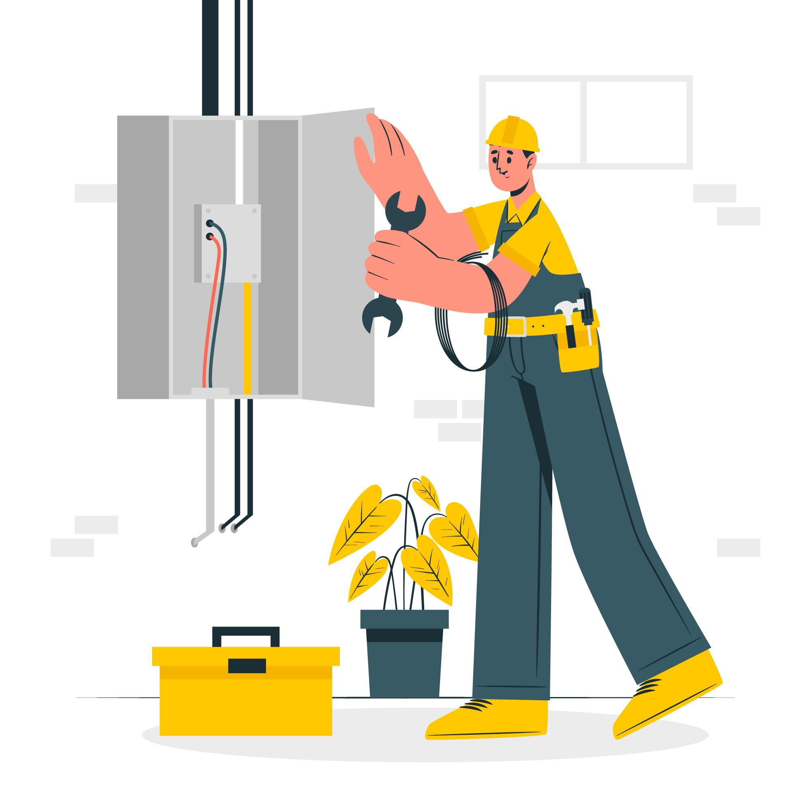
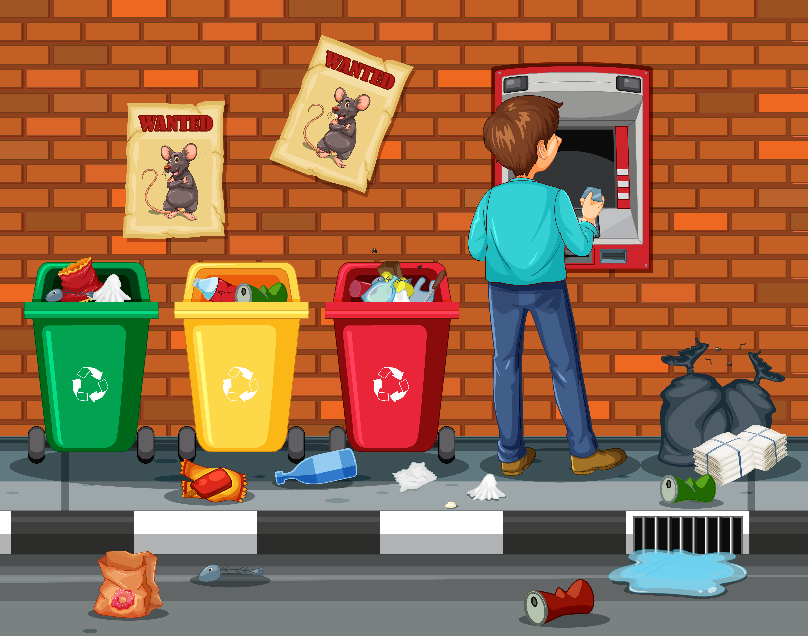
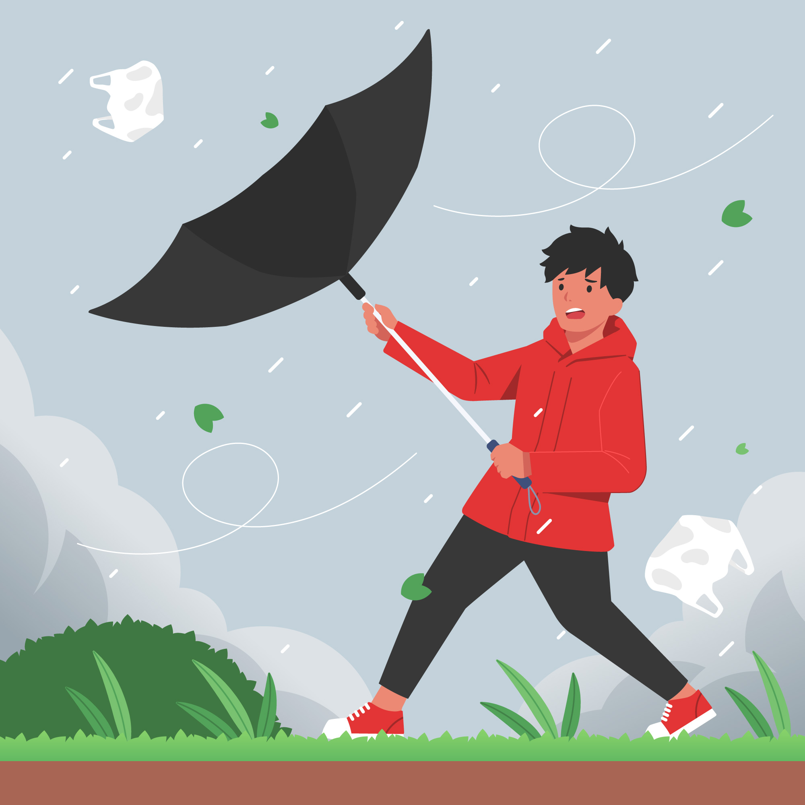
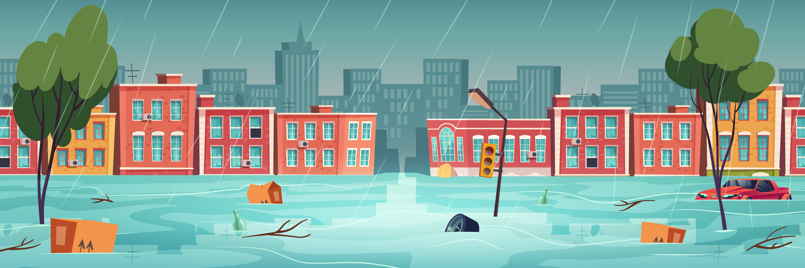
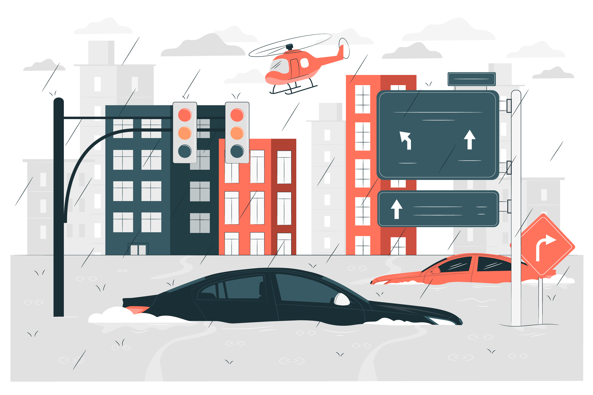
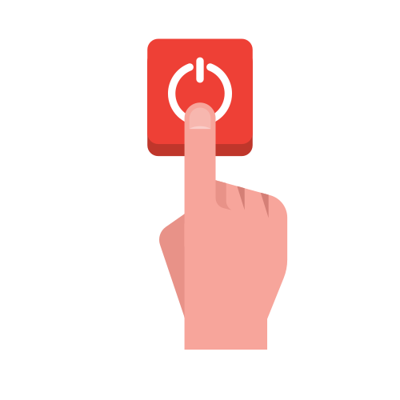
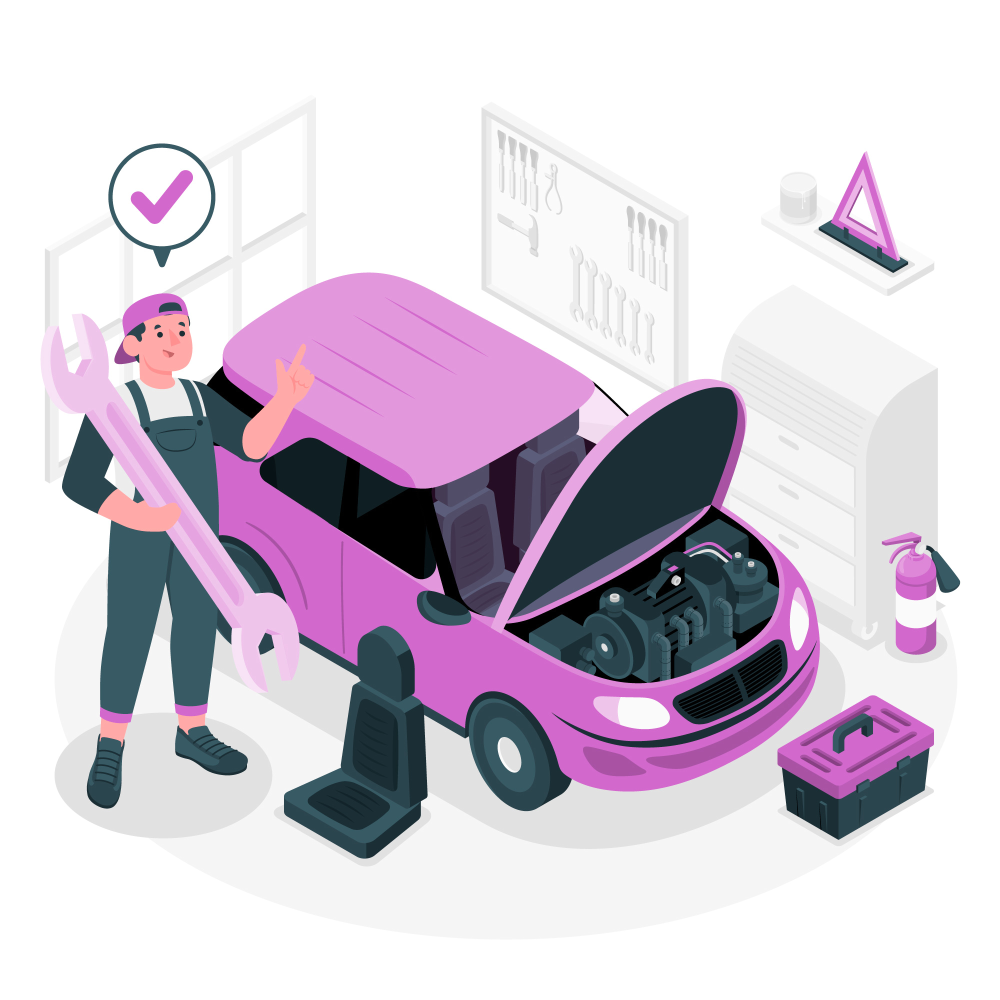
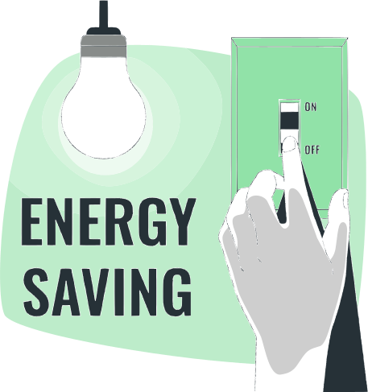
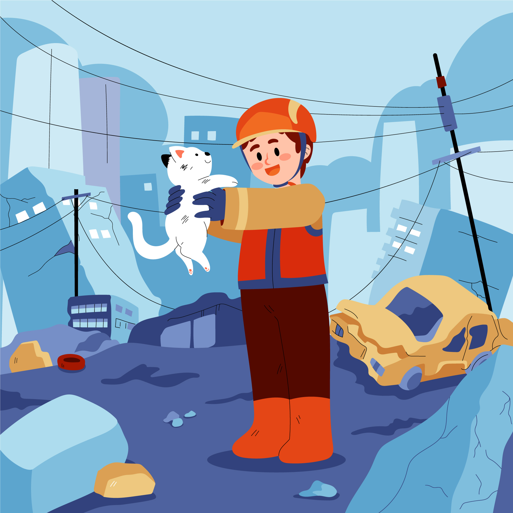

Prevenções
Tutorial passo a passo para se previnir de alagamentos em casa:
Prevenir alagamentos em sua casa é fundamental para proteger sua propriedade e garantir a segurança de sua família. Aqui estão algumas etapas que você pode seguir:

- 1. Planejamento urbano adequado:
- -Se você está construindo uma casa nova, considere a topografia do terreno.
Evite áreas propensas a alagamentos e escolha locais mais elevados.
- -Certifique-se de que o projeto da casa inclua drenagem adequada para afastar a água da chuva.
- 2. Impermeabilização:
- -Impermeabilize as fundações e alicerces da casa para evitar a infiltração de água. Use produtos como pintura asfáltica ou membranas impermeabilizantes
- -Verifique regularmente se há rachaduras ou vazamentos nas paredes e pisos.

- 3. Áreas verdes e vegetação:
- -Quanto mais espaço coberto por vegetação, melhor. O solo não pavimentado absorve mais água da chuva, permitindo que a água penetre no solo e chegue aos lençóis freáticos, ao invés de escorrer pelas ruas
- -Plante árvores e arbustos em seu jardim para ajudar a absorver o excesso de água.

- 4. Sistema de drenagem:
- -Instale calhas e canaletas para direcionar a água da chuva para longe da casa.
- -Verifique se os bueiros e sistemas de escoamento estão limpos e desobstruídos.
- 5. Elevação de móveis e objetos:
- -Mantenha móveis e objetos importantes em áreas elevadas, como prateleiras ou suportes.
- -Isso evita que sejam danificados em caso de alagamento.

- 6. Sistema elétrico seguro:
- -Desligue a chave geral de energia durante enchentes para evitar choques elétricos.
- -Eletricidade e água não combinam!

- 7. Desobstrua ralos e bueiros:
- -Regularmente, limpe ralos, canaletas e bueiros para garantir que a água flua livremente.
- 8. Esteja preparado:
- -Tenha um kit de emergência com itens essenciais, como lanternas, alimentos não perecíveis e água.
- -Saiba onde estão os pontos mais altos em sua área para buscar refúgio em caso de inundação.
Lembre-se de que a prevenção é sempre mais eficaz do que lidar com as consequências de um alagamento. Mantenha-se informado sobre as condições climáticas e tome medidas proativas para proteger sua casa. 😊
Tutorial passo a passo para se previnir de alagamentos no carro:
Aqui estão algumas dicas para se prevenir de alagamentos no seu carro:

- 1. Previna-se:
- -Ao primeiro sinal de chuva forte, se possível, evite sair de casa. Caso não tenha alternativa, siga as recomendações abaixo.

- 2. Evite passar por áreas com histórico de alagamentos:
- -mantenha-se atento a notícias sobre pontos críticos de sua cidade.
- 3. Estacione em lugar seguro:
- -Se for pego de surpresa por uma chuva forte durante o trajeto, procure locais elevados e estacione. Evite deixar seu carro próximo a árvores e postes.
- 4. Redobre sua atenção:
- -Dirigir sobre asfalto molhado em locais com pequenos alagamentos pode trazer riscos de aquaplanagem e acidentes. Não fique próximo a veículos de grande porte, pois eles provocam pequenas ondas que podem alagar o seu carro.

- 5. Altura da água:
- -Se estiver em um local alagado e a água estiver acima da metade da roda do carro, faça o retorno. Caso não consiga, procure um lugar para estacionar de modo que não interfira no trânsito, saia do carro e procure um lugar elevado e seguro.
- 6. Mantenha a calma:
- -Algumas anomalias poderão ocorrer com o veículo, mas na maioria das vezes são situações momentâneas que não impedem a dirigibilidade.

- 7. Veículo no meio do alagamento:
- -Ao dirigir em áreas alagadas, mantenha o carro em marcha reduzida, com aceleração constante e baixa velocidade.

- 8. Desligue o que não for essencial:
- -Durante o trajeto, desligue o ar condicionado, rádio, luz interna e tudo o que não for estritamente importante para a movimentação do carro durante a travessia.

- 9. Manutenção do carro após um alagamento:
- -Caso tenha passado por uma área alagada, é importante fazer uma vistoria no veículo, mesmo que aparentemente o carro não tenha sinais evidentes de danos
Respostas
Tutorial passo a passo para reagir se o alagamento já estiver na sua casa:
Se a sua casa já estiver alagada, siga estas etapas para lidar com a situação de forma eficiente:
- 1. Proteja sua saúde:
- -Use máscaras, luvas de plástico e botas de borracha para evitar o contato direto com a água suja.
- -Tenha sacos plásticos à mão para proteger os braços, caso o nível da água ainda esteja alto.

- 2. Desligue a energia e o gás:
- -Antes de sair, desligue a chave geral de energia, o registro de água e o gás.
- -Isso evita complicações maiores e riscos elétricos.
- 3. Volte para casa com segurança:
- -Retorne apenas quando a chuva tiver cessado e o nível de água não representar perigo.
- -Se possível, espere até que a casa esteja limpa e desinfetada antes de trazer crianças e animais domésticos de volta.
- 4. Remova móveis e objetos danificados:
- -Itens como colchões devem ser descartados, pois a água acumulada pode proliferar bactérias.
- -Limpe e higienize os objetos sujos de lama, preferencialmente na área externa da casa.
- 5. Higienize a casa com água sanitária:
- -A água das chuvas traz consigo bactérias nocivas à saúde.
- -Use água sanitária para desinfetar superfícies e áreas afetadas.
Lembre-se de que prevenir é sempre o melhor caminho. Se você mora perto de rios e córregos, verifique regularmente a limpeza desses locais para evitar alagamentos1. Espero que essas dicas sejam úteis! 😊
Tutorial passo a passo para reagir a um alagamento dentro do carro:
Reagir a um alagamento dentro do carro é crucial para garantir a sua segurança e evitar danos ao veículo. Aqui estão algumas dicas essenciais:
- 1. Mantenha a calma:
- -Ao se deparar com um trecho alagado, respire fundo e mantenha a tranquilidade.
- -Evite o pânico, pois decisões precipitadas podem agravar a situação.
- 2. Avalie a profundidade da água:
- -Olhe para o alagamento e verifique a altura da água.
- -Se estiver acima da metade da roda do carro, não tente atravessar.
- 3. Desligue o motor:
- -Se a água estiver subindo rapidamente, desligue o motor imediatamente.
- -Isso evita danos ao sistema elétrico e mecânico do veículo.
- 4. Não force a passagem:
- -Não acelere nem tente forçar o carro a atravessar.
- -A água pode entrar no motor e causar sérios danos.
- 5. Seja paciente:
- -Espere até que a água abaixe ou busque um caminho alternativo.
- -Se possível, aguarde por ajuda ou orientação.

- 6. Se o carro parar no meio do alagamento:
- -Permaneça dentro do veículo e não tente empurrá-lo.
- -Ligue para um serviço de assistência ou para a emergência.

- 7. Após sair do alagamento:
- -Verifique os freios e seque os discos antes de continuar a viagem.
- -Procure um mecânico para avaliar possíveis danos.
Lembre-se de que a segurança deve ser sempre a prioridade. Se não tiver certeza, é melhor evitar atravessar áreas alagadas. 😊
.png)
.png)